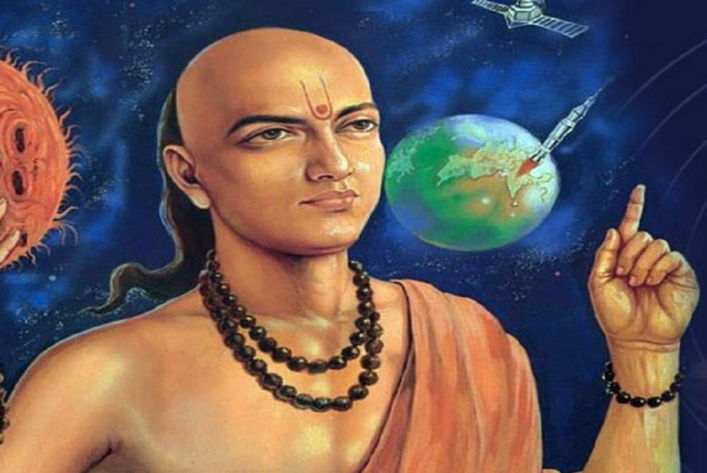

Welcome to the Mathematical World!
Aryabhata
Aryabhata (476 CE – c. 550 CE)
Aryabhata was a pioneering Indian mathematician and astronomer born in 476 CE, traditionally believed to be from Kusumapura (modern Patna, Bihar, India). He is one of the earliest mathematicians whose works have survived and whose influence shaped the foundation of classical Indian mathematics and astronomy.
Aryabhata authored the seminal work:
- Aryabhatiya (499 CE) — a comprehensive treatise combining mathematics and astronomy, composed in 118 verses, that remains a classic text influencing later scholars.
Life and Background
Very little is conclusively known about Aryabhata's early life. Some sources identify him as hailing from
Kusumapura, capital of the ancient Magadha kingdom, a center of learning and culture. He lived during the
Gupta
period, a golden age for Indian arts and sciences.
Aryabhata is sometimes confused with other later astronomers of the same name, but his distinct
contributions set
him apart as one of the earliest innovators in Indian mathematical astronomy.
Mathematical Contributions
- Place Value and Zero
- Aryabhata used a place-value decimal system, an advanced form of notation that laid the groundwork for the modern decimal system. While he did not explicitly use zero as a digit, his numeral system implied the concept of zero as a placeholder, which was elaborated by later mathematicians.
- Approximation of π
-
Aryabhata gave an astonishingly accurate approximation of pi (π), stating it as:
\
He expressed it in terms of a circle’s circumference and diameter, estimating π correct to four decimal places, a remarkable achievement for the time. - Trigonometry
-
Aryabhata introduced the concepts of sine (jya), cosine, and versine in Indian mathematics. He presented
the
sine table for angles between 0° and 90° in increments of 3.75°, with values calculated using a radius
of 3438
(the number of minutes in a circle).
His trigonometric formulas and methods of interpolation paved the way for more precise astronomical calculations. - Algebra and Arithmetic
- Aryabhata worked on solving linear and quadratic equations. He gave methods for summing arithmetic and geometric progressions and developed techniques for finding unknowns in indeterminate equations.
Astronomical Contributions
- Earth’s Rotation and Heliocentrism
- He correctly explained the Earth’s rotation on its axis, giving a heliocentric explanation for the apparent movement of the stars.
- Solar Year Calculation
- He provided calculations of the length of the solar year as 365.358 days, very close to the modern value.
- Eclipses
- His descriptions included solar and lunar eclipses, based on the shadows cast by and on the Earth.
- Earth and Celestial Measurements
- Aryabhata also estimated the diameter of the Earth and distances to the Moon and Sun with impressive accuracy for his era.
Aryabhatiya: The Masterpiece
The Aryabhatiya is divided into four sections:
- Gitikapada — Introduction with mathematical and astronomical fundamentals.
- Ganitapada — Mathematics: arithmetic, algebra, trigonometry, and more.
- Kalakriyapada — Time calculations, including planetary positions and eclipses.
- Golapada — Sphere and celestial phenomena.
Legacy and Influence
- His treatises were studied and commented on by later scholars like Varahamihira, Bhaskara I, and Brahmagupta.
- Arab mathematicians and astronomers translated and incorporated his ideas during the Islamic Golden Age, helping to transmit Indian mathematical concepts to the West.
- Aryabhata’s legacy endures in modern Indian science and mathematics, with institutions and awards named in his honor.
Summary
Aryabhata stands as a monumental figure in the history of mathematics and astronomy:
- Pioneer of place-value decimal system concepts.
- Provided the first accurate approximation of π.
- Explained Earth's rotation centuries before Copernicus.
- Made critical advances in trigonometry and algebra.
- Authored the Aryabhatiya, a foundational text still studied for its mathematical depth and elegance.